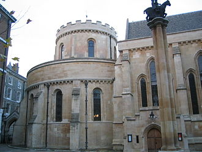
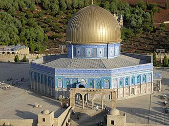
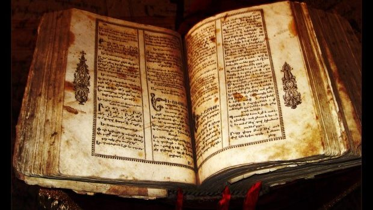
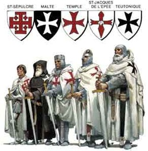

 Datorită misiunii militare şi resurselor financiare extensive, Cavalerii templieri au iniţiat un mare număr de proiecte şi construcţii de-a lungul Europei şi Ţării Sfinte. Multe dintre aceste structuri încă stau în picioare. De asemenea, multe conţin numele de "Templu", datorită asocierii timp de secole cu templierii. De exemplu, unele din posesiunile templierilor din Londra au fost mai târziu închiriate avocaţilor, ceea ce a condus la numele porţii Bariera Templului sau staţiei de metrou "Templu". Două dintre cele patru barouri, care îi pot consacra pe membri drept avocaţi, sunt Templul Interior şi Templul Mijlociu.
Elemente arhitecturale distinctive ale clădirilor templierilor includ folosirea imaginii a "doi cavaleri pe un singur cal", reprezentând sărăcia cavalerilor şi clădiri rotunde, menite a se asemăna cu Biserica Sfântului Mormânt din Ierusalim.
Prin decret papal, proprietatea templierilor a fost transferată Ordinului Ospitalierilor, care de asemenea a absorbit mulţi dintre membrii templieri. Practic, dizolvarea templierilor ar putea fi văzută drept unirea celor două ordine rivale. Un alt decret, Ad ea ex quibus, emis de papa Ioan al XXII-lea la 14 martie 1319, dar şi în urma rugăminţilor sau a negocierilor dintre suveranii aragonezi şi cei portughezi şi papalitate, le-a permis templierilor supravieţuitori să-şi găsească refugiu, dar şi posibilitatea unui nou început. Mai precis, continuarea cruciadelor (dar, pe pământ iberic) şi a Reconquistei, apoi îndeplinirea de misiuni extrateritoriale în Perioada marilor descoperiri (începând sub înrâurirea prinţului Henric Navigatorul). Astfel, au luat naştere 2 ordine militaro-călugăreşti noi, succesoare celui templier: Ordinul Militar al lui Cristos, în Portugalia, şi Ordinul de Montesa (10 iunie 1317), în Aragon, care funcţionează şi azi, dar sunt reformate.
Povestea templierilor medievali secretoşi, însă puternici, în special persecuţia şi dizolvarea lor subită, a devenit o tentaţie pentru multe alte grupuri, care se folosesc de aşa-zise legături cu templierii ca o modalitate de a-şi îmbunătăţi propria imagine sau de a creşte misterul ce îi înconjoară. De exemplu, încă din anii 1700, Ritualul masonic de York a încorporat unele simboluri şi ritualuri ale templierilor şi au o filială, numită astăzi Ordinul Cavalerilor Templieri. Suveranul Ordin Militar al Templului din Ierusalim (grup bonapartin şi ecumenic), fondat în 1804, are un statut de organizaţie caritabilă non-guvernamentală, conform Organizaţiei Naţiunilor Unite.
Deşi nu există o legătură istorică clară între Cavalerii Templieri, care au fost desfiinţaţi în anii 1300, şi oricare dintre aceste organizaţii, care au apărut abia în anii 1700, se creează adeseori o confuzie publică şi mulţi scapă din vedere diferenţa de 400 de ani.
Cavalerii Templieri au fost asociaţi cu legende privind secrete şi mistere transmise din timpuri străvechi. Zvonuri circulau chiar şi din timpul templierilor înşişi. Scriitorii francmasoni şi-au adăugat propriile speculaţii în secolul al 19-lea şi alte înfloriri fictive au fost adăugate în filme moderne, cum ar fi: Comoara naţională şi Regatul cerului, cărţi best-seller: Ivanhoe şi Codul lui Da Vinci, precum şi jocuri video: Hellgate: London şi Broken Sword: The Shadow of the Templars.
 Multe dintre legendele legate de templieri privesc ocuparea iniţială a Muntelui Templului din Ierusalim şi speculaţii în legătură cu relicvele pe care templierii le-ar fi putut găsi acolo, cum ar fi Sfântul Graal sau Arca Testamentului. Faptul că templierii posedau anumite relicve este ştiut cu siguranţă. Multe biserici încă expun relicve, cum ar fi moaştele unui sfânt, o bucată de pânză purtată odinioară de un om sfânt sau craniul unui martir: templierii au procedat la fel. Era cunoscut că aveau o bucată din Adevărata Cruce, pe care episcopul de Acra a purtat-o în dezastruoasa bătălie de la Hattin. Când bătălia a fost pierdută, Saladin a capturat relicva, care a fost apoi răscumpărată de către cruciaţi atunci când musulmanii le-au predat oraşul Acra în 1191. De asemenea, aveau în posesie capul Sfintei Eufemia din Calcedon. Subiectul relicvelor a fost abordat şi în timpul Inchiziţiei templierilor, deoarece câteva documente ale proceselor se referă la venerarea unui anumit idol, menţionat în unele cazuri drept o pisică, un cap bărbos sau uneori drept Baphomet, probabil o greşeală franţuzească de ortografie a cuvântului Mahomet (Mahomed). Aşa-zisa venerare a idolilor a fost inclusă în acuzaţiile aduse împotriva templierilor şi a condus la arestarea acestora la începutul secolului al XIV-lea. Această acuzaţie de venerare a idolilor adusă împotriva templierilor a contribuit şi la credinţa modernă a faptului că unii templieri practicau vrăjitoria.
Exista în timpul Cruciadelor un interes particular faţă de mitul Sfântului Graal, care a fost rapid asociat templierilor, încă din secolul al XII-lea. Primul roman cavaleresc legat de Graal a fost Povestea Graalului text fantastic scris în 1180 de către Chrétien de Troyes, care provenea din aceeaşi zonă unde Conciliul de la Troyes sancţionase oficial Ordinul Templierilor. În legenda Arturiană, eroul căutării Graalului, Sir Galahad (o invenţie literară din secolul al XIII-lea a călugărilor din Ordinul cistercian al Sfântului Bernard de Clairvaux) era descris purtând un scut cu crucea Sfântului Gheorghe, similară cu insigna templierilor. În poemul epic cavaleresc din acea perioadă, Parzival, Wolfram von Eschenbach se referă la templierii care păzeau Regatul Graalului. O legendă s-a dezvoltat bazată pe faptul că, deoarece templierii îşi aveau sediul pe Muntele Templului din Ierusalim, au excavat în căutare de relicve, au găsit Graalul şi au continuat să-l păstreze şi să-l păzească cu propria viaţă. Cu toate acestea, în documentele extensive ale Inchiziţiei templierilor, nu există nici măcar o singură menţiune cu privire la vreun obiect legat de Sfântul Graal, nemailuând în considerare şi posesia unui astfel de obiect. În realitate, majoritatea specialiştilor sunt de acord cu faptul că povestea Graalului a fost doar una fictivă, care a început să circule din timpurile medievale.
Un artefact legendar ce pare a avea legătură cu templierii este Giulgiul din Torino. În 1357, giulgiul a fost expus publicului pentru prima dată de către familia nepotului lui Geoffrey de Charney, templierul care fusese ars pe rug împreună cu Jacques de Molay în 1314. Originile artefactului sunt încă un subiect controversat, însă datarea cu carbon dovedeşte că giulgiul a fost creat între anii 1260 şi 1390, un interval de timp care include ultimii 50 de ani ai templierilor.
Speculaţiile privind supravieţuirea templierilor au inspirat diverse lucrări beletristice. În Moştenirea Templierilor Steve Berry lansează ipoteza că aceştia s-ar fi retras în munţii Pirinei şi ordinul şi-ar avea sediul la Abaţia "Des Fontaines", lângă Andorra.
Home |
Istorie |
Organizare |